Já na App Store · versão 1.15+10K downloads no iOSNo Android em 29 de novembroNovo: dilemas e passe por toque1ª e 10 · cada descida é suaEdite os 32 timesCollege → Draft → Hall da FamaPré-temporada, draft de cinco rodadas e Grande Jogo32 times · 53 por roster100 conquistas do Game CenterSem anúncios · sem contaEm breve: o jogo em portuguêsJá na App Store · versão 1.15+10K downloads no iOSNo Android em 29 de novembroNovo: dilemas e passe por toque1ª e 10 · cada descida é suaEdite os 32 timesCollege → Draft → Hall da FamaPré-temporada, draft de cinco rodadas e Grande Jogo32 times · 53 por roster100 conquistas do Game CenterSem anúncios · sem contaEm breve: o jogo em português
PixelFootball
Sua carreira
Sua carreira começa aqui
A carreira inteira de um quarterback, do college ao Hall da Fama. Seu ataque não é simulado: você joga cada descida.
Puxe o estilingue e solte, ou toque no seu recebedor. O pocket fecha de verdade, o vento empurra a bola e o sack é físico: se o rusher te toca, acabou.
PasseA bola voa de verdade
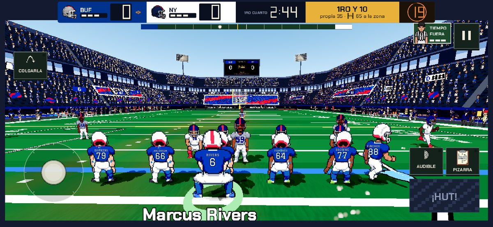
POVJogue de dentro do capacete
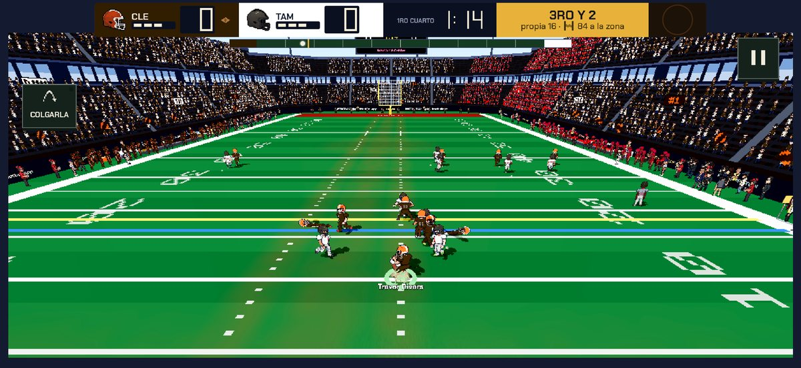
SackSe te tocam, acabou
+10KDownloads no iOS
32Times
18Semanas
53Por roster
100Conquistas
0Anúncios
A transmissão
O jogo inteiroparece TV
A noite do draft, seu vestiário, o mercado e o Grande Jogo, como numa transmissão.
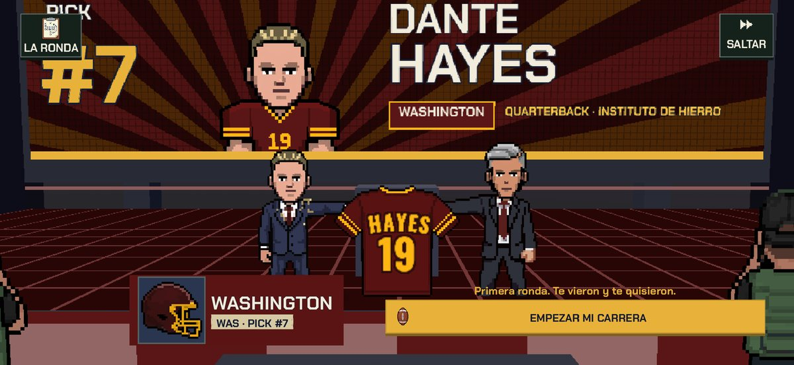
DraftO comissário chama seu nome
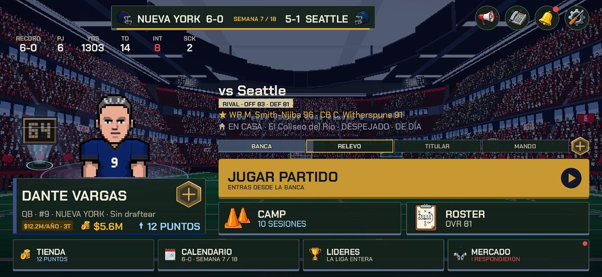
VestiárioSua carreira, semana a semana
TrocasFaça a troca que falta
TimeEscolha onde começar
Seu QBRosto, cabelo, número e college
AnelA promessa do jogo, cumprida
A carreira
Do bancoao comando
Você chega como mais um. Jogue bem e o coach confia em você; no comando, o draft, as contratações e as trocas são suas.
1Banco
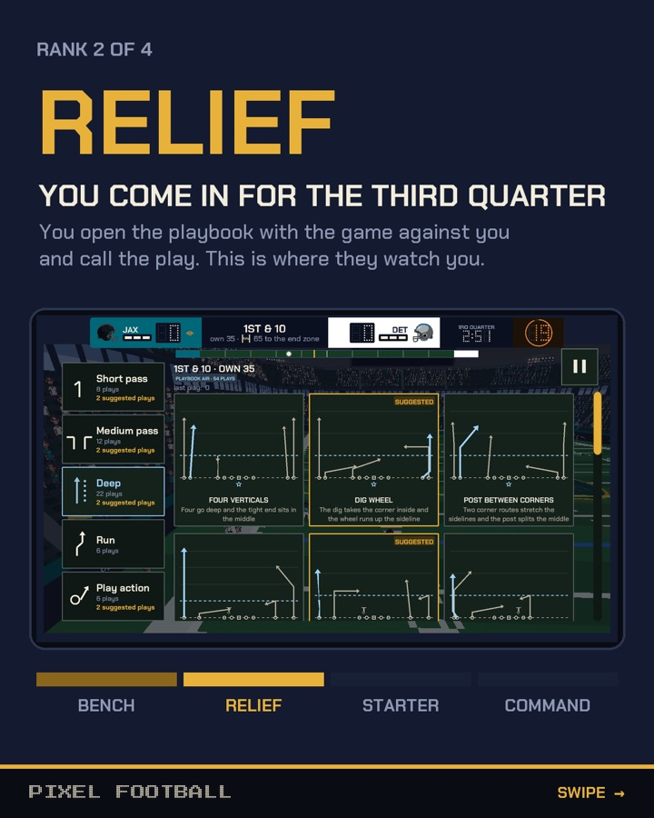
2Reserva
3Titular
4Comando
Temporada nova
Mais carreira,mais sua
Três jogos antes da semana 1, um agente ao telefone, dilemas que voltam depois e 32 times para vestir do seu jeito.
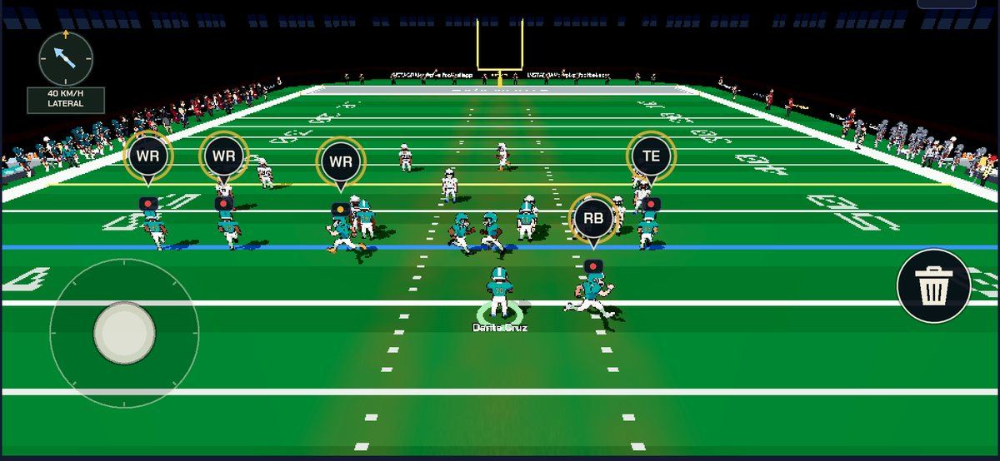
ToqueToque no recebedor e a bola sai
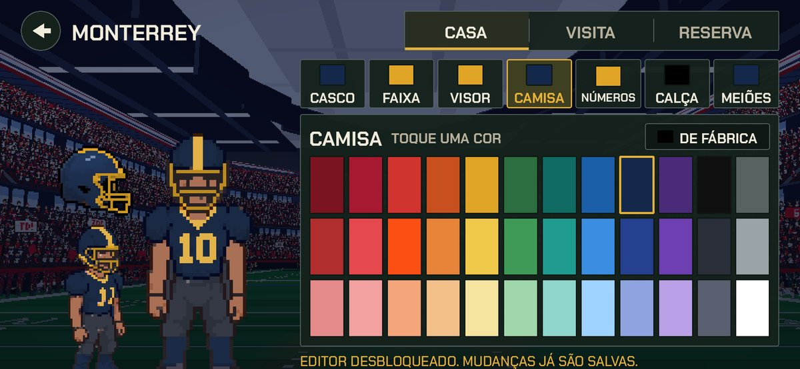
EditorSeu nome, sua sigla, suas cores
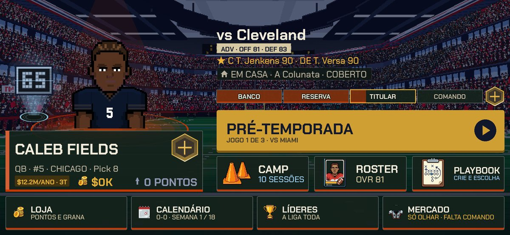
Pré-temporadaConquiste o coach
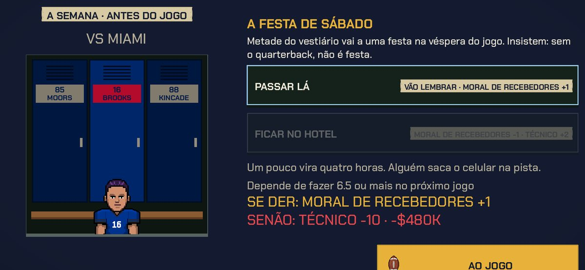
DilemaSua resposta volta depois
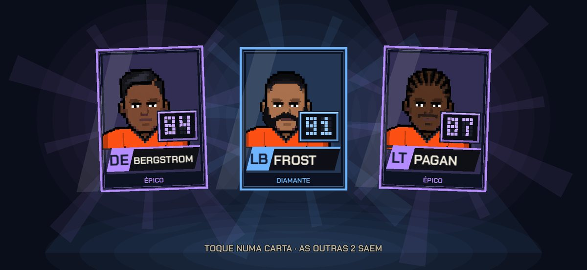
PacotesTrês atletas, escolha um
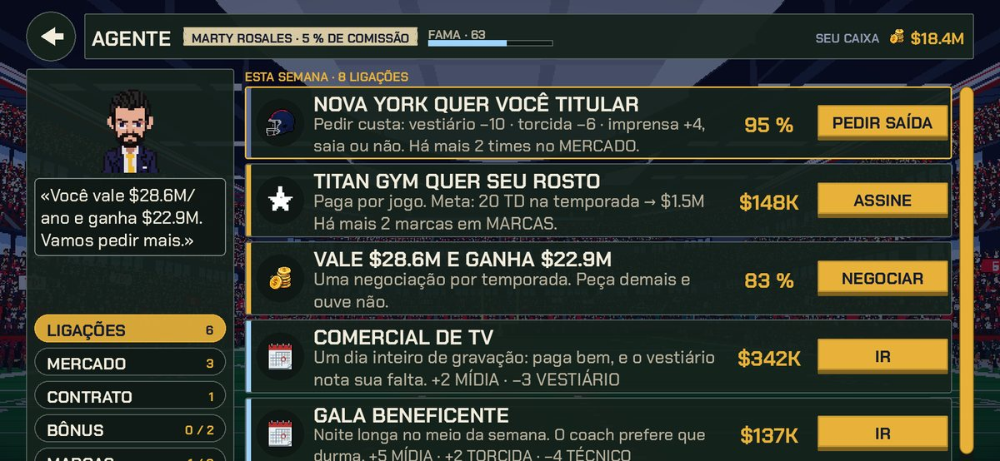
AgenteLiga toda semana
Novidades
O jogonão para de crescer
Já disponível1.15 · Dilemas
Dilemas e entrevistasSua resposta volta semanas depois.
O passe por toqueTAP: a bola vai à rota. TAP PRO: você manda. Com tutorial na Academia.
Bola de couroA recepção vai às mãos do recebedor.
O chute em três toquesHUT!, pare a mira e toque de novo para a força.
Melhorias por faixasMelhorar um companheiro custa como melhorar seu QB.
Seu companheiro é um cardFicha de coleção, e o banco de RB, WR e TE na mão.
1.13 · 1.14Um QB com vida
O editor de timesNome, sigla e cores dos 32 times. Compra única.
A pré-temporadaTrês jogos para conquistar o coach e dominar o playbook.
Os recebedores fintamVendem o lado contrário e o marcador pode morder.
Seu agente ligaAparições, reforços e cláusulas toda semana.
O draft da TVCinco rodadas, com a sala e o relógio no alto.
Discord e InstagramA comunidade, a um toque do menu de carreiras.
1.11 · 1.12Um mercado real
O mercado não é lojaUm titular de 80 ou mais custa um atleta ou um pick.
Os intocáveisO melhor de cada time não se vende na temporada.
A sala de vídeoSeis coaches, quadros e o feixe do projetor.
A porta PlaybookSuas jogadas e seu playbook, direto do vestiário.
O chute no playbookSó um tempo desfaz sua decisão.
O quadro neonA campanha narrada com os 22, quem fez e quem fechou.
1.10A despedida
A despedidaAo se aposentar, o estádio te recebe com seus troféus e anéis.
Os aposentadosUm álbum de cards guarda os números de cada carreira.
Menos interceptaçõesO defensor sozinho já não rouba sempre, e o simulado paga a sua parte.
O 99 se separaSeu recebedor rápido abre vantagem e o rusher corre o que a ficha diz.
A noite de playoffsA chave marca em dourado seu caminho ao Grande Jogo.
Patrimônio de vitrineSua casa, seus carros e seu iate, cada um no seu palco.
1.9Duelo e Infernal
O duelo de QBA intro divide a tela: os dois QBs aquecem juntos, cada um na sua metade.
Rastros do passeVinte rastros para seu lançamento, no replay e na loja.
A roleta do audibleDez rotas na roda, em espelho conforme o lado do recebedor.
O elenco na pausaA energia de cada um, a divisão de bolas e onde atacar.
InfernalO quinto nível de dificuldade. Depois de Lenda, só isto.
Escolha seu timeAntes do draft: na sorte ou por troca. O time que sobe por você te faz titular.
Em breve1.16 · Suas festas
Suas festasMonte sua rotação de três, também em dupla.
Salvar no meio do jogoContinue de onde parou.
Um jogo mais fluidoComeça sem travar e roda mais leve.
A defesa disfarçaO rival esconde a frente antes do snap.
O chute em dois toquesO HUT! congela a força e outro toque chuta.
Em portuguêsO jogo inteiro em português do Brasil.